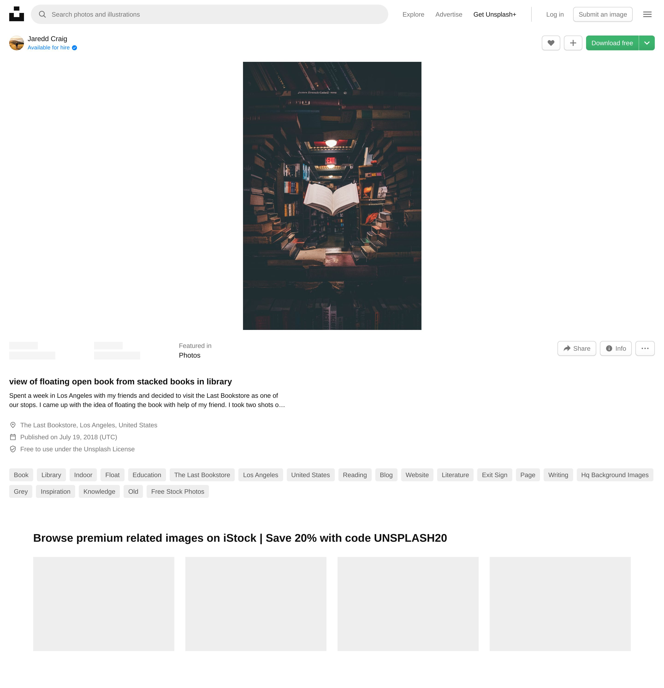

A Right to Knowledge
All sorts of literature and media are banned worldwide, and I believe that taking away access to information and art violates a human right, the right to knowledge. Everyone should be able to view what they want to, regardless of the country or administration's policies. In many cases, banning can be irrational or deliberate ignorance when a government bans something based on fear that there may be dissent among their citizens. Join my cause to fight against institutions and governments and take back our right to knowledge!
Why do literature and media get banned? Most reasons involve indecent, profane, or obscene content. For example, Harper Lee's "To Kill a Mockingbird" is often banned for its heavy language and themes such as racism and sexual violence. Similarly, shows like "South Park" face bans for political satire and controversial themes. Religious or political reasons often lead to banning media, particularly to shield youth or suppress dissenting ideas.
Schools, governments, religious institutions, and other organizations frequently ban books and media. Schools in the United States have banned thousands of books, citing inappropriate content or offensive language. Governments may ban works based on ideological conflicts. For example, George Orwell's "1984" is banned in some authoritarian regimes for its critique of totalitarianism. Such bans aim to suppress ideas that could incite dissent or revolution.